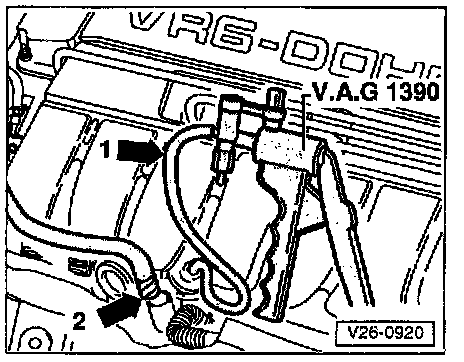

Air Injection Control Valve: Testing and Inspection
- Disconnect pressure hose from AIR Inlet Valve.- Disconnect vacuum hose from AIR Solenoid Valve (N112).

- Connect VAG 1390 hand vacuum pump to disconnected vacuum hose -1- and AIR Inlet Valve.
CAUTION!: Do not use compressed air during this check.
- Connect auxiliary hose to connection -2-, in place of pressure hose, and blow into it.
- AIR Inlet Valve must be closed
- Operate hand vacuum pump.
- AIR Inlet Valve must open